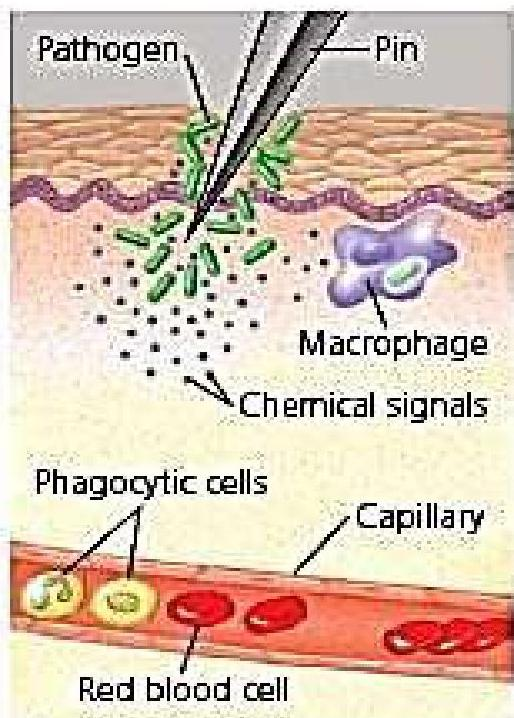
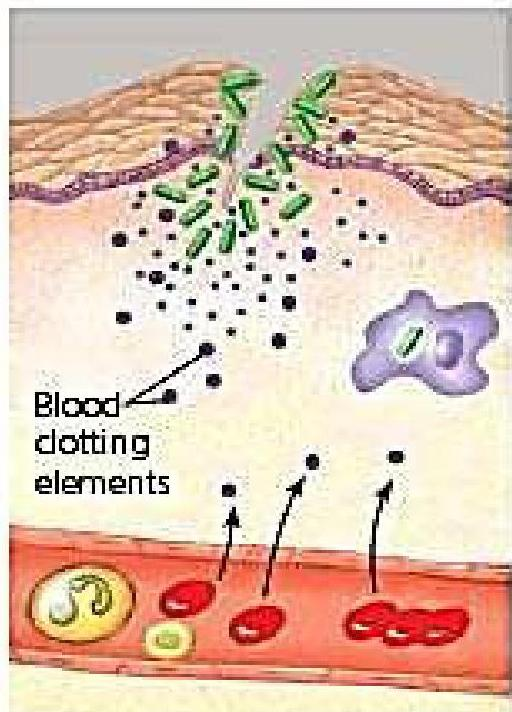
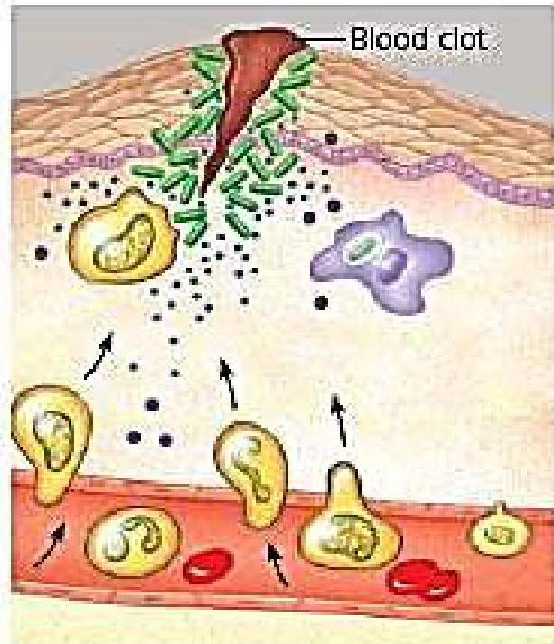
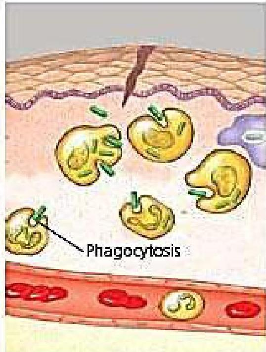

PROCESS OF INFLAMMATION
Introduction
Definitions
- Definition 1: the local response of living body tissues to injury due to any agent.
- Definition 2: The complex biological response of body tissues to harmful stimuli, such as pathogens, damaged cells, or irritants
Inflammation is a protective response involving;
- immune cells,
- blood vessels,
- molecular mediators
It is also the body defense reaction – to eliminate or limit the spread of injurious agent
Causes of Inflammation
- Infective agents like bacteria, viruses, fungi, parasites (and their toxins).
- Immunological agents like cell-mediated and antigen antibody reactions.
- Physical agents like heat, cold, radiation, mechanical trauma.
- Chemical agents like organic and inorganic poisons.
- Inert materials such as foreign bodies (chemically inactive)
Signs of inflammation
-
4 cardinal signs (according to Celsus)
- Redness
- Swelling
- Heat
- Pain
-
5th sign
- Loss of function – (according to Virchow)
Types of inflammation
Mainly of 2 types i.e. acute and chronic
-
Acute Inflammation
- short duration
- represents the early body reaction - followed by healing
-
Chronic inflammation
- longer duration
- causative agent of acute inflammation persists for a long time
The Inflammatory Process
Involves the following events:
VASCULAR EVENTS/RESPONSE
a) Hemodynamic changes
- Transient vasoconstriction: Is the immediate vascular response to achieve hemostasis irrespective of type of injury.
- Persistent progressive vasodilation: Involves mainly arterioles but to a lesser extent, capillaries. It results in increased blood volume in the micro-vascular bed of the site of acute inflammation.
- Elevated local hydrostatic pressure: Caused by progressive vasodilation which results in transudation of fluid into the local site causing edema.
- Slowing/stasis of microcirculation follows, causing increased concentration of RBCs and thus raised blood viscosity.
b) Altered vascular – permeability
There are two mechanisms –:
- Chemical mediators of acute inflammation may cause retraction of endothelial cells, leaving intercellular gaps (chemical mediated vascular leakage).
- Toxins and physical agents may cause necrosis of vascular endothelium, leading to abnormal leakage (injury induced vascular leakage).
CELLULAR EVENTS/RESPONSE
Includes:
i) Formation of the Cellular Exudate
How do white blood cells get out of the circulation and into the area where they are needed?
- The movement of leukocytes from the vessel lumen in a directional fashion to the site of tissue damage is called chemotaxis.
- All granulocytes and monocytes respond to chemotactic factors and move along a concentration gradient (from an area of lesser concentration of the factor to an area of greater concentration of the factor).
ii) Phagocytosis
- The process whereby cells ingest solid particles is termed phagocytosis.
- The first step in phagocytosis is adhesion of the particle to be phagocytosed to the cell surface. The phagocyte ingests the attached particle by sending out pseudopodia around it. These meet and fuse so that the particle lies in a phagocytic vacuole (also called a phagosome) bounded by cell membrane. Lysosomes, then fuse with phagosomes to form phagolysosomes. It is within these that intracellular killing of microorganisms occurs.
INFLAMMATION PROCESS STEPS
-
Chemical signals released by activated macrophages and mast cells at the injury site cause nearby capillaries to widen and become more permeable.

-
Ruid, antimicrobial proteins, and clotting elements move from the blood to the site. Clotting begins.

-
Chemokines released by various kinds of cells attract more phagocytic cells from the blood to the injury site.

-
Neutrophils and macrophages phagocytose pathogens and cell debris at the site, and the tissue heals.

Disorders of Inflammation
Factors that can influence chronic inflammation
- Dietary factors,
- Physical activity,
- Smoking
- Obesity
- Alcohol consumption
- Stress can affect inflammation.
Examples of disorders associated with inflammation include:
- Acne vulgaris
- Asthma
- Autoimmune diseases
- Chronic prostatitis
- Diverticulitis
- Glomerulonephritis
- Hypersensitivities
Management
FEVER/PYREXIA: Occurs due to bacteremia. Administer prescribed antipyretics e.g paracetamol. Give high calorie diet in the form of carbohydrates. This is to meet the increased metabolic demand in patients with fever.
LEUCOCYTOSIS: Usually in bacterial infections there is neutrophilia, viral infections cause lymphocytosis, parasitic infections cause eosinophilia. Administer prescribed antibacterial agents.
DIET: Provide easily digestible diet (light diet), keep the fluid balance, and give high protein diet for the formation of new tissue to build up the destroyed tissue.
SEDATION: Inflammation will produce pain, therefore sedative drugs may be given to induce sleep.
SHOCK: Systematic activation of coagulation pathway may occur leading to microthrombi throughout the body and results into DIC, bleeding and death. Severe tissue injury results in profuse systemic vasodilation, increased vascular permeability and intravascular volume loss causing hypotension and shock. Give plenty of I.V fluids.
PAIN: Immobilize the affected limb, administer prescribed analgesics. Give anti-inflammatory agents e.g ibuprofen, indomethacin, steroids e.g prednisone and dexamethasone.
REST: Elevate the affected limb. The inflamed part is rested by elevation. In case of arms use splints, and for lower limbs use pillows and clear.
LOCAL TREATMENT: If the inflammation is broken and septic, use antiseptics to kill the pathogenic microbes in in the wound. Examples of antiseptics include: hydrogen peroxide, hibitane (Chlorexidine).
Systemic effects of inflammation
- Fever: infectious form of inflammation
- Anaemia
- Leucocytosis
- Septic shock